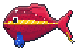

Fischelner Samtfisch!
Aus Fischeln, mitten in Krefeld, der Samt- und Seidenstadt. Glänzt wie Samt und trägt eine Krawatte aus echter Krefelder Seide.

Aus Fischeln, mitten in Krefeld, der Samt- und Seidenstadt. Glänzt wie Samt und trägt eine Krawatte aus echter Krefelder Seide.
